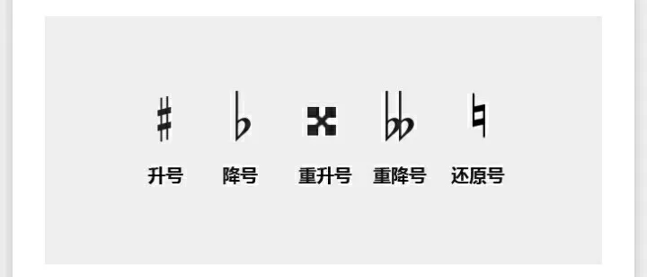
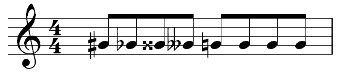

本部分介绍一些临时变音记号，包括升记号、降记号、重升记号、重降记号，以及还原记号。

上图这些变音记号和还原记号在五线谱中位于音符左侧，图例如下：

这些符号的含义如下表所示：
| 符号名称 | 含义 |
| 升记号 | 将基本音级升高半音 |
| 降记号 | 将基本音级降低半音 |
| 重升记号 | 将基本音级升高两个半音（一个全音） |
| 重降记号 | 将基本音级降低两个半音（一个全音） |
| 还原记号 | 将已经升高或降低的音还原 |
根据上表便可得知，上图中第一个音符在加上升记号后，表达的音名就从原来的G变成了升G（唱名即升sol），第二个为降G（降sol），第三个音符加了重升记号，升两个半音，就变成了A（la），第四个为F（fa）。 右半部分，音符前加了还原记号，则表达的音名便回到G（sol）。
需要注意的是，在同一个小节中，如果变音符号后有两个相同的音符，则后面的音符同样受到变音符号影响。但如果后面的音符前有还原符号，那么它表示的就是自己原本的音（对下一小节开头的相同音符，一般也会使用还原记号，表示它回到了原本的音）。